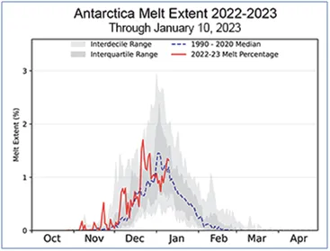
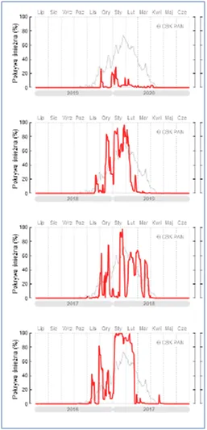
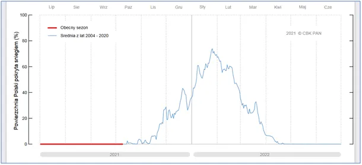

Normą jest anomalia, normalność nigdy nie występuje.
Celowo taki tytuł na granicy, ale sprawa jet ważna.
Na pierwszym wykresie mamy w procentach stopień stopnienia lodów wokół Antarktydy. Teraz mamy tam szczyt lata, więc czerwony wykres meandruje wokół maksimum.
Odchylenia od niebieskiej kreski budzą najwięcej emocji i to jest największy błąd. Czym jest niebieska linia, przed którą oddają pokłony mainstreamowe media? To średnia lub mediana z okresu referencyjnego, czyli poziom odniesienia w przeszłości. Jako zjawisko czegoś, co widzimy na niebiesko, nigdy nie było i nie będzie.
Każdy rok jest inny, obserwujemy to i zapisujemy od 7000 lat i czas się z tym pogodzić! Na drugim obrazku widzimy serię z 4 lat "pokrycie śniegiem Polski dzień po dniu w kolejnych latach".

Na trzecim rysunku widzimy na niebiesko średnią z 16 lat. Z oczywistych powodów taki wykres będzie z czasem zbliżał się do krzywej Rozkładu Normalnego, nazywanego też Krzywą Gausa. Co roku wykresy czerwone odchylają się dość radykalnie od krzywej niebieskiej, bo w przebiegach takich zjawisk jak pogoda czy klimat mamy mnóstwo zmiennych i spory ładunek losowy wpleciony w rytm zjawiska cyklicznego.

Zimą pada śnieg, latem deszcz, ale bywa, że na 1 maja zrobi się biało jak w 1985, gdy pochody pierwszomajowe brnęły w gęstym śniegu.
Czy się ociepla, czy może oziębia można stwierdzić porównując do siebie długie, np. 100-letnie okresy, reszta to wróżenie z fusów. Dziś mamy jako takie dane satelitarne z ostatnich 40. lat, ale tylko z okolic równikowych. O biegunach zaczynamy te dane zbierać. Są źródła pośrednie, ale nie jest poważne, aby podawać średnią temperaturę na Ziemi z dokładnością do ułamków stopnia z roku 1855 czy 1900.
Paweł Klimczewski